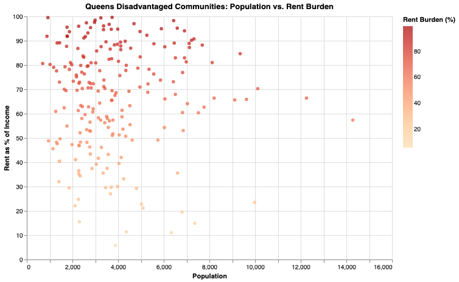
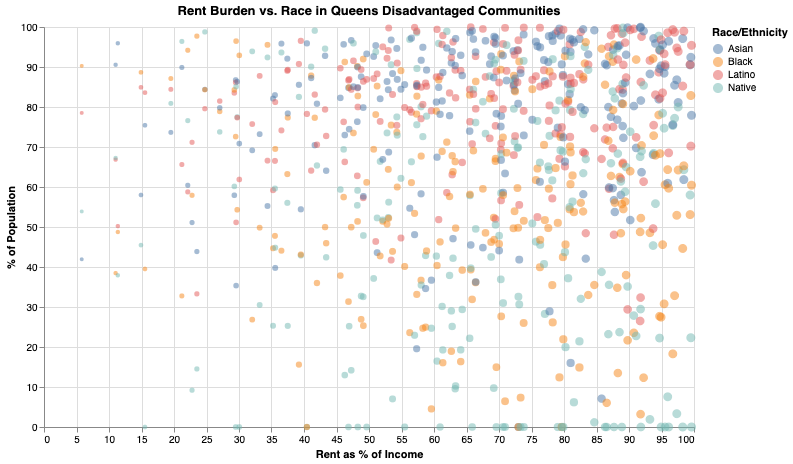
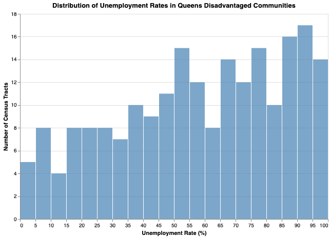
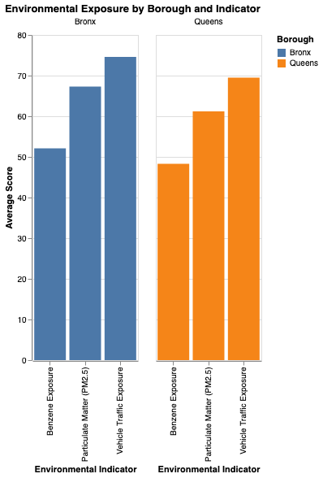
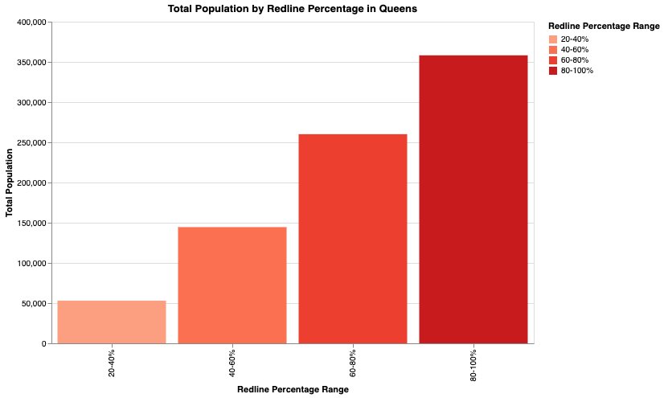
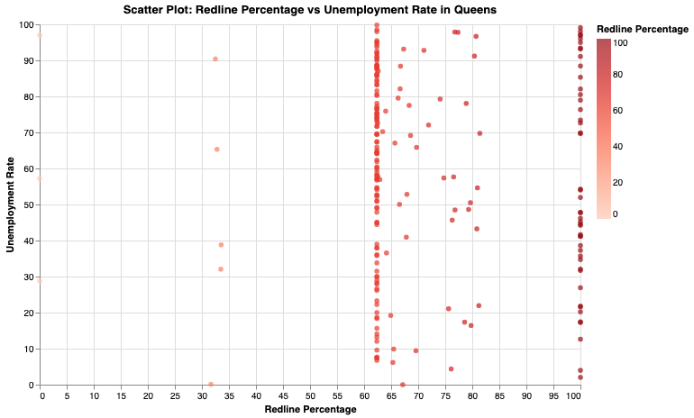

New York City is home to diverse communities, each with unique challenges and opportunities. Among these, certain neighborhoods have faced systemic disadvantages due to historical and ongoing socio-economic and environmental factors. These areas often struggle with higher unemployment rates, increased rent burdens, and environmental hazards. A significant contributing factor to these disparities is the legacy of redlining—a practice that systematically denied services to residents of certain areas based on racial or ethnic composition. The following visualizations provide insights into these challenges, culminating in an examination of how redlined districts correlate with low employment rates. Below are few graphs showing major environmental justice concerns in Queens' disadvantaged communities.

This chart illustrates the relationship between population size and rent burden in Queens' disadvantaged communities. It highlights how neighborhoods with larger populations often experience higher rent burdens, indicating significant economic strain.

Here, we see the distribution of rent burden across different racial and ethnic groups in Queens. The data reveals disparities in housing affordability, with communities of color facing higher rent burdens, reflecting systemic housing inequities.

This graph displays the distribution of unemployment rates across various census tracts in Queens. It demonstrates how unemployment rates tend to increase alongside rent burdens, underscoring the economic challenges within these communities.

This chart compares environmental exposure levels between the Bronx and Queens. The Bronx exhibits higher exposure to pollutants like benzene and particulate matter, highlighting environmental justice concerns in lower-income neighborhoods.

This graph categorizes Queens' population based on the extent of redlining in their areas. It reveals that regions with higher redline percentages contain a disproportionately large share of the population, indicating enduring effects of historical housing discrimination.

Finally, this scatter plot correlates unemployment rates with the percentage of redlined areas in Queens, strangely staggering around 60-65% . It highlights the persistent economic disparities in these neighborhoods, where higher unemployment rates align with areas historically subjected to redlining.